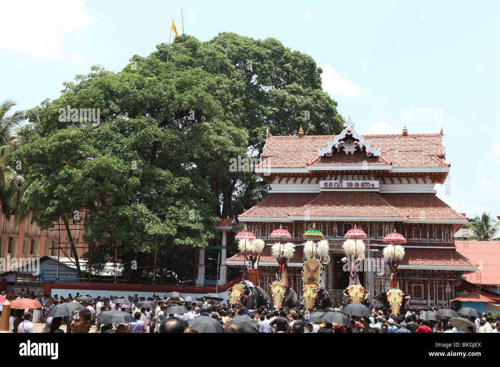

The pooram officially begins from the event of flag hoisting (കൊടിയേറ്റം).
The flag hosting ceremony (Kodiyettam) begins seven days before Thrissur Pooram.
All the participating temples of Thrissur Pooram are present for the ceremony,
and there is a light fireworks to announce the commencement of the festival.

Thrissur pooram flag hoisting ceremony in front of paramekkavu temple
A week before the Pooram, flags are hoisted at the participating temples. Under
the leadership of Tantri and Melashanti, Shudthikalasam is performed before
hoisting the flag. Kodimaram is the gourd prepared by the temple's emergency
carpenters. Alila and Mavila are tied to the gourd which is polished and attached
to the flag. In the presence of the temple officials, the Tattakas receive the
flagpole with shouts and place it in the pit prepared for the dedication.
The Thiruvambadi- Paramekkav Devaswams, which are the main participants in
the Thrissur Pooram, have certain rights only. Pandals and fireworks are
important among them. Only they have the right to raise pandals on the
circumambulation road. They also have the right to firecrackers. There have
been various disputes between these two groups in the past. There has been
the same in numbers with elephants and competitions with pandals.
Everything is sorted today.